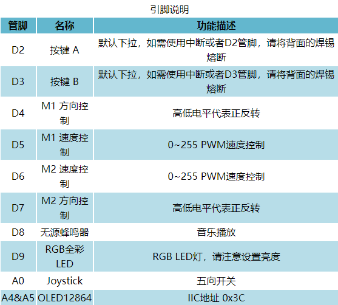
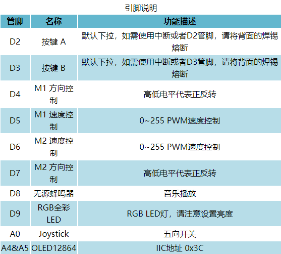

1. “厚物”扩展板¶
虚怀若谷，厚德载物。厚物——虚谷号第一块多功能扩展板，外扩虚谷号通用I/O管脚，兼容DFRobot Gravity 3-Pin传感器接口，可外接众多传感器及模组。围绕国家“新时代，新课标，新课堂”课改要求，针对学校电子信息课实际教学场景，主打编程教学体验。
虚谷号是中国电子学会创客教育专家委员会针对中国创客教育现状设计的一块符合中国情的开源硬件控制器。满足现有的基础教育需求，兼容市场主流开源硬件，集Arduino，树莓派，micro:bit等优点于一身，兼具高性能与高性价比。虚谷号面向人工智能教育，采用中国芯片，打造中国版开源硬件——虚怀若谷，包容一切！
1.1. 简介¶
厚物扩展板，集成一组双路电机驱动，0.96英寸OLED12864显示屏，无源蜂鸣器及一列RGB全彩LED灯，满足现场教学应用及比赛场景设计。支持电机外接供电，满足机器人等应用场景；OLED既可作为Linux调试窗口，又可作为传感器数据显示来用；蜂鸣器及RGB全彩LED灯可贴合实际交通信号指示灯场景，满足课程教学应用。板载五向开关及A/B按键设计，可作程序调试开关使用。
1.2. 特性¶
双路电机驱动
OLED显示
一列三个RGB LED
蜂鸣器提醒
五向开关及A/B调试按钮
兼容Gravity传感器
1.3. 技术规格¶
兼容主板：虚谷号
工作电压：3.3V/5V兼容
电机驱动：TB6612FNG
驱动电流：1.2A连续电流；2A/3.2A启动电流(连续脉冲/单脉冲)
电机外接供电：<12V
OLED屏幕尺寸：0.96英寸
OLED屏幕分辨率：128x64
无源蜂鸣器
RGB LED x3
五向开关按键（A0口）
A/B按键调试按键（默认下拉）
尺寸：53.5*85.5mm
1.4. 引脚说明¶
 

1.5. 使用教程¶
本教程会对扩展板基础功能做必要的解释和说明。
准备
硬件：
1 x 虚谷号控制板 1 x 厚物扩展板
软件： Arduino IDE（虚谷号自带）
将厚物扩展板插到虚谷号上，虚谷号通电（推荐5V@2A USB供电）。
1.6. 功能清单¶
点亮OLED屏幕
RGB全彩LED灯
无源蜂鸣器
按键
电机驱动（需外接电源至M_Vin口）